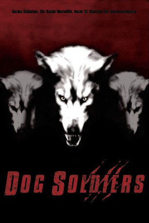

#11091 Dog Soldiers
 
 IMDB-Wertung: 6.8 / 10
IMDB-Wertung: 6.8 / 10  Tomatometer: 79
Tomatometer: 79  Metascore: 0
Metascore: 0 
Tief in den schottischen Highlands lauert ein schreckliches Geheimnis... Arglose Wanderer verschwinden und kehren nie wieder zurück. Ausgerechnet hierhin verschlägt es einen Trupp knallharter Soldaten auf einer Trainingsmission. Mit dem Feind, der ihnen aus dem Dunkel der Nacht entgegentritt, haben sie jedoch nicht gerechnet. Ihre letzte Rettung ist ein altes Farmhaus, doch als der Vollmond über den Highlands aufgeht, wird den abgebrühten Soldaten die Hoffnungslosigkeit ihrer Lage bewusst: Umstellt von einem Werwolfrudel, beginnt ein Kampf auf Leben und Tod - mit aller Feuerkraft, die den Männern zur Verfügung steht.
Jahr: 2002
Dauer: 105 Minuten
FSK: 16
Land: England Studio: Koch MediaTonspuren: DTS - ,
Untertitel:
Auflösung: 1080p (1920x1040) Größe: 10065 MB
Genre: Action, Thriller, Horror
Regisseur: Neil Marshall
Drehbuch: Neil Marshall
Soundtrack: Mark Thomas
Darsteller:
 Sean Pertwee als Sgt. Harry G. Wells
Sean Pertwee als Sgt. Harry G. Wells Kevin McKidd als Pvt. Cooper
Kevin McKidd als Pvt. Cooper- Emma Cleasby als Megan
 Liam Cunningham als Capt. Ryan
Liam Cunningham als Capt. Ryan Craig Conway als Camper
Craig Conway als Camper- Ben Wright als Werewolf
- Thomas Lockyer als Cpl. Bruce Campbell
- Darren Morfitt als 'Spoon' Witherspoon
- Chris Robson als Pvt. Joe Kirkley
- Leslie Simpson als Pvt. Terry Milburn
- Tina Landini als Camper
- Villrikke's Acer als Sam the Dog
- Bryn Walters als Werewolf
- Brian Claxton Payne als Werewolf
Datei: X:\2002\Dog Soldiers (2002, FSK16, 1920x1040).mkv seit 24.04.2019
Festplatte: Gemischt-01+Anime
 Es gibt insgesamt 93 Filme in der Gruppe '2002'
Es gibt insgesamt 93 Filme in der Gruppe '2002'